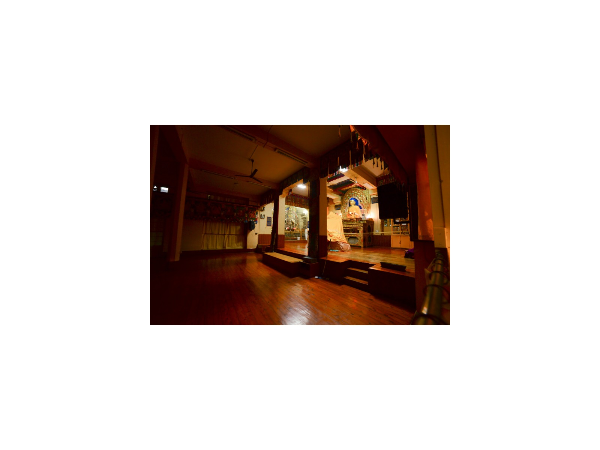
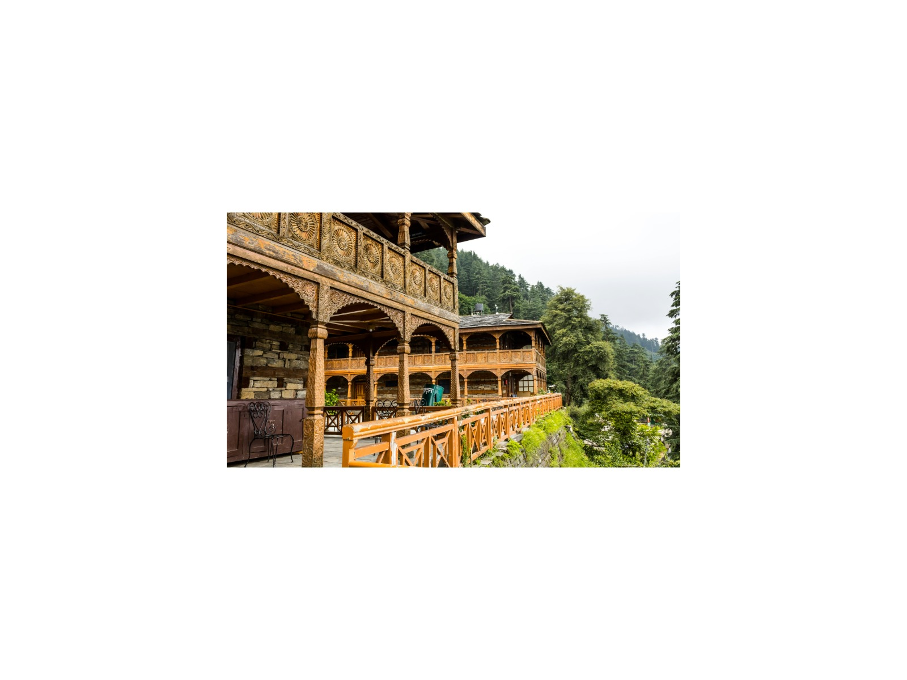
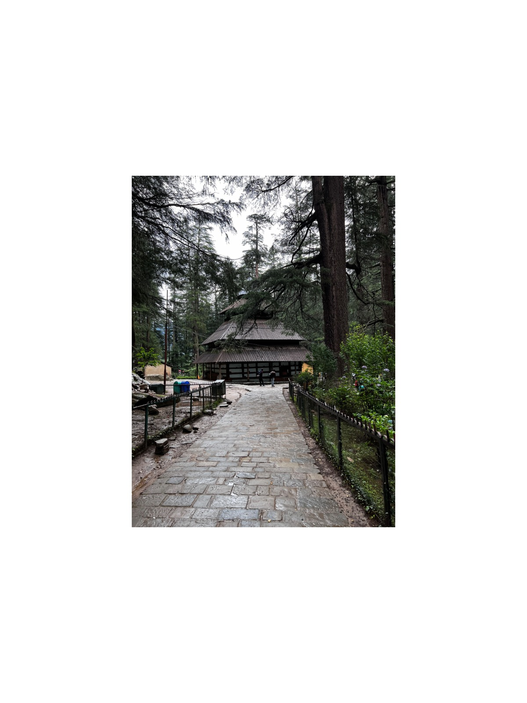
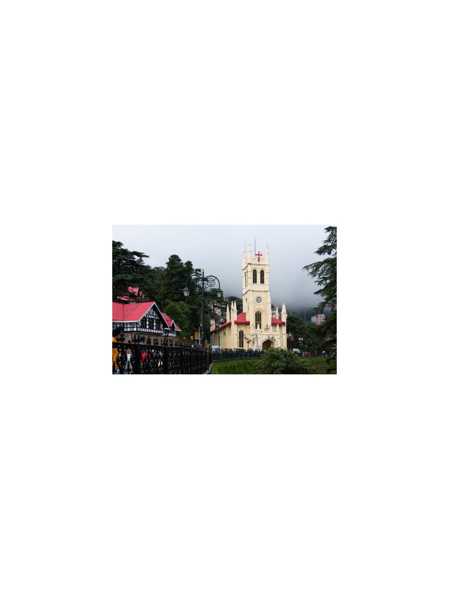
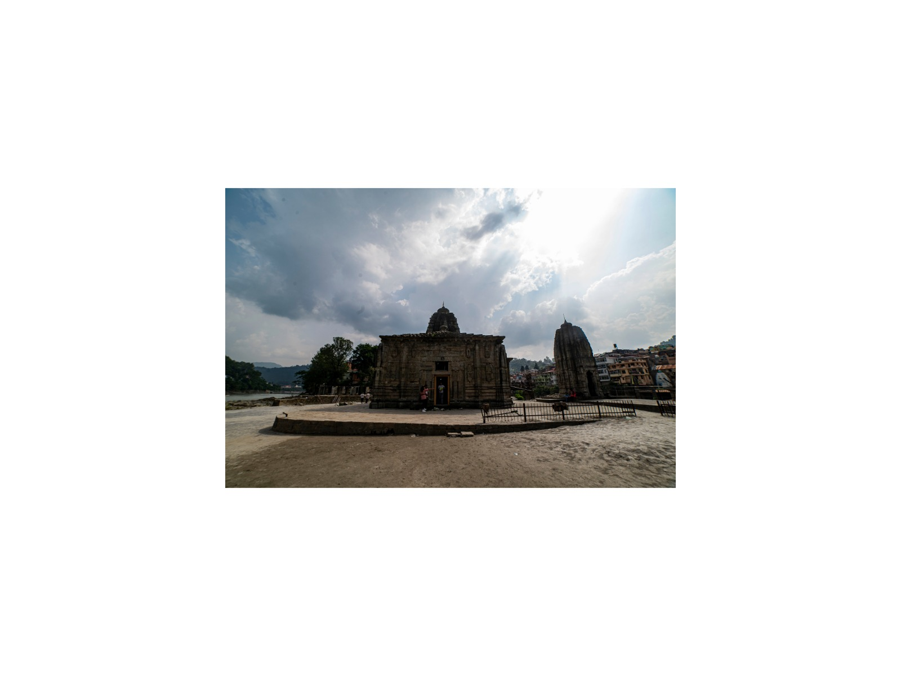

8-Day Himalayan Heritage Rail: Toy Train, Kullu Valley & McLeod Ganj
Delhi · Kalka · Shimla · Mandi · Naggar · Manali · Vashisht · Bir · Dharamshala/McLeod Ganj
The journey
Rides the UNESCO-inscribed Mountain Railways of India (Kalka-Shimla) and immerses travelers in Tibetan Buddhist and indigenous Himalayan sacred traditions.
Full days with several long drives. Best for energetic travellers.
Highlights
- UNESCO Kalka-Shimla Toy Train ride.
- Shimla's Vice Regal Lodge and Mall Road.
- Naggar Castle, Roerich Art Estate, and Tripura Sundari Temple.
- Hadimba Temple in Manali, Vashisht Hot Springs, and optional paragliding at Bir-Billing (seasonal, not included).
- McLeod Ganj Dalai Lama Residence, Norbulingka Institute, and St. John in the Wilderness.
Day by day
Kalka-Shimla Heritage Toy Train
Transit from Delhi to Kalka (approx. 4–5 hours by morning train or road; pre-book the toy-train seats). Board the UNESCO Kalka–Shimla narrow-gauge Toy Train to Shimla (approx. 5–6 hours), passing through more than 100 tunnels. Overnight in Shimla.
Colonial Shimla Exploration
Tour Vice Regal Lodge, Jakhu Temple, Christ Church, and Mall Road. Overnight in Shimla.
Drive to Kullu Valley & Naggar
Drive to Naggar via Mandi (approx. 7–8 hours including stops). Photo stop at Pandoh Dam and Bhootnath Temple. Optional Beas River rafting. Overnight in Naggar.
Art & Heritage of Naggar
Tour Naggar Castle, Tripura Sundari Temple, and Nicholas Roerich Estate & Art Gallery. Overnight in Naggar.
Manali Sightseeing & Bir Heights
Drive to Manali (approx. 1 hour). Visit Hadimba Temple and Vashisht Hot Springs. Continue to Bir (approx. 6–7 hours). Optional tandem paragliding at Bir-Billing (seasonal and weather-dependent). Overnight in Bir.
Dharamshala & McLeod Ganj (Little Lhasa)
Drive to Dharamshala/McLeod Ganj. Tour Tsuglagkhang Complex (Dalai Lama's temple & residence exterior), Tibetan Refugee Settlement, and St. John in the Wilderness church. Overnight in Dharamshala.
Tibetan Arts & Cultural Immersion
Visit Tibet Museum and Norbulingka Institute. Evening at leisure. Overnight in Dharamshala.
Departure via Kangra (Gaggal) Airport
Transfer to Kangra (Gaggal) Airport for the flight to Delhi (flight not included).
What is included
Included
- Private air-conditioned vehicle with driver
- Licensed guide (English or Russian)
- Monument entry fees
- Hotels (7 nights)
- Toy Train tickets
Not included
- Flights
- Meals unless stated
- Tips and personal expenses
- Travel insurance
Indicative; your personal quotation confirms exactly what is included.
Good to know
- Toy-train seats must be booked in advance.
- Paragliding at Bir-Billing is seasonal and weather-dependent.
Places on this journey
Toy Train
McLeod Ganj Monasteries
Castle Roerich Estate
Roerich Estate
Hadimba Temple Springs
Springs Paragliding
Paragliding
Christ Church
Bhootnath Temple Tsuglagkhang Complex
Tsuglagkhang ComplexThemes
Himalayan Escapes UNESCO World Heritage Trail Spiritual & Multi-Faith
Destinations
Similar journeys
 1 Day
1 Day1-Day Taj Mahal & Agra Fort: Private Day Journey from Delhi
Features two premier UNESCO World Heritage monuments (Taj Mahal and Agra Fort) and showcases Mughal royal fortress architecture and citadel…
View journey → 1 Day
1 Day1-Day Imperial Delhi & Spiritual Heritage: Private Full-Day Tour
Encompasses UNESCO World Heritage landmarks (Humayun's Tomb, Qutub Minar, Red Fort) alongside sacred spiritual sanctuaries of Islam, Sikhism, and…
View journey → 1 Day
1 Day1-Day Jaipur Royal Express: Private Tour from Delhi
Incorporates UNESCO-listed Amber Fort and Jaipur Walled City monuments, centered entirely on Kachhwaha Rajput royal palaces and military…
View journey →